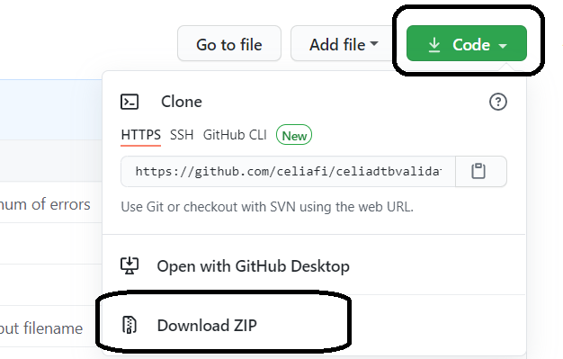
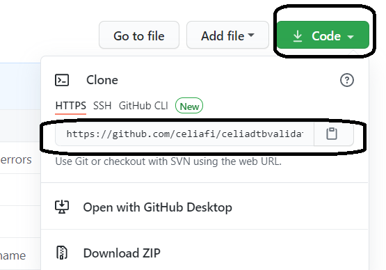
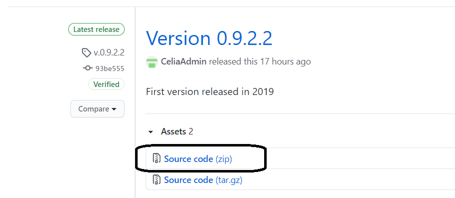

The Celia DTB Validator analyses files for their digital peak level, true peak (ISP) level, signal-to-noise ratio and LUFS. Validator also looks for unexpected silences in files and checks that there is silence at end of file and no silence at start of file.
If examined book is Daisy it is also possible to validate book using Daisy Pipeline Validator light. It is also possible to encode audio of a Daisy book to mp3 using Daisy Pipeline.
Celia DTB Validator is designed to work on Windows 10, using Python 3.8.7. (newer python3 versions should also work)
For audio and Daisy validation it is required that following programs are also installed:
Please refer to the documentation of the programs mentioned for more information on installation and usage.
Newest version of Celia DTB Validator can be downloaded from github as a zip:
...or by cloning it with git, using for example https that can be seen in project page:
with command
git clone https://github.com/celiafi/celiadtbvalidator.git
Archived older releases can be downloaded as zip from releases page
For installation of Celia DTB Validator the files can be placed in any location.
Celia DTB Validator is written in pure Python3 and does not require any additionalPython modules to run. Usage of virtualenv is always a good practise, but it is not really needed here as there are no additional third party python modules needed.
For basic usage use validator_gui.py to run Celia DTB Validator GUI.
For advanced usage use celia_dtb_validator.py from cmd or Powershell.
These are the key consepts in Celia DTB Validators usage:
Input path:
Path to the folder containing book to be validated
Output path:
Path to folder where encoded book is placed (if audio encoding is enabled)
Report path:
Path to folder where validation report is stored
Config file:**
File where all variables (for example valid LUFS values etc.) can be set and where audio and daisy validations and audio encoding can be enabled/disabled. Config file is located on the same folder as the file celia_dtb_validator.py.

Minimalistic GUI enables user to define all paths, open the config file for editing and to start the validation.
Validation output is shown on Python3 prompt. After validation is finished the report is shown in usersdefault webbrowser.

After examining the report the user can then decide wheter or not to proceed with audio encoding.

Command line interface can be run with following command:
python celia_dtb_validator.py -i BOOKPATH [-o OUTPUTPATH] [-r REPORTPATH]
There is also parameter -h to print basic usage info and -v to print version number.
NOTE ON PATHS WITH SPACES:
If you use paths with spaces you should leave out the last backslash. The last backslash will be interpreted as escape character. Use 'C:\Temp\Path With Spaces' instead of 'C:\Temp\Path With Spaces\'
You can also use double quotes ie. "'C:\Temp\Path With Spaces\'", or use forward slahes instead, ie. 'C:/Temp/Path With Spaces/'
All setting can be configured using the config.txt file.
Following configurations can be set:
Please see config.txt for more information.
Note: If you mess up your configuration file a new one is generated automatically, if you delete or rename the current config.txt file.
This program is free software: you can redistribute it and/or modify it under the terms of the GNU General Public License as published by the Free Software Foundation, either version 3 of the License, or (at your option) any later version. This program is distributed in the hope that it will be useful, but WITHOUT ANY WARRANTY; without even the implied warranty of MERCHANTABILITY or FITNESS FOR A PARTICULAR PURPOSE. See the GNU General Public License for more details. You should have received a copy of the GNU General Public License along with this program. If not, see http://www.gnu.org/licenses/.